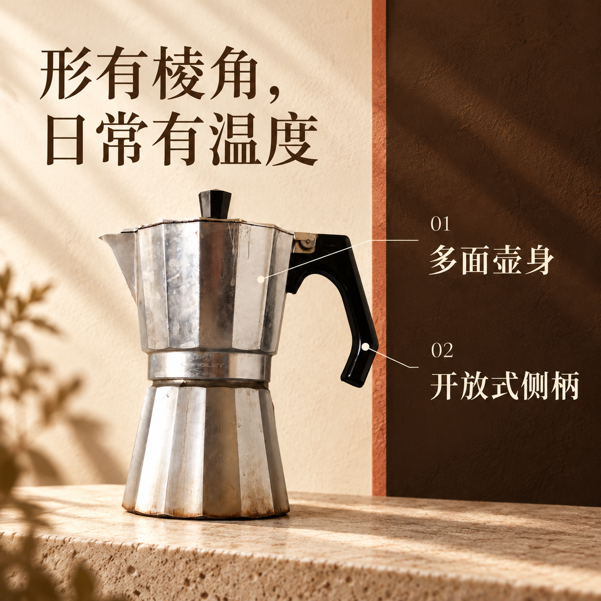

商品详情草稿 · 基于真实网络照片制作的演示，成色和规格尚未由卖家确认
银色多面壶身，
黑色开放式侧柄。
把日常，慢慢煮好。

从轮廓，读懂这只壶。
多面壶身
上下壶体呈现清楚的棱面轮廓，中段以圆环过渡。
黑色侧柄与顶钮
黑色部件与银色外观形成对比，侧柄下端开放。
壶嘴与壶盖
左侧短壶嘴、棱面壶盖与顶部旋钮在原图中可见。

看清商品本身。
原图中的物品表面可见水渍、划痕及底沿旧痕。这组图片以原始外观为依据制作，实际出售物品的成色应另由卖家确认。

编辑备注：发布前补齐资料
请补充品牌型号、商品成色、材质、容量、尺寸、炉具兼容性、包装包含物与售后信息。当前图片的细小刻字及表面纹理仍有待实物核对。
这是供编辑和适配的本地详情草稿；请依据目标平台的要求安排最终图片与文字。